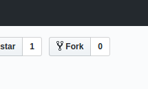
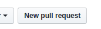
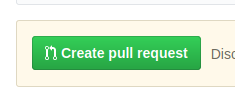

Jeśli chcesz coś dodać do strony, podążaj za tymi krokami:
- Załóż konto na Githubie, jeśli go nie masz.
- Jeśli nie znasz się na Githubie, przejdź przez tutorial, który się tam znajduje.
- Odwiedź nasze publiczne repozytorium.
- Naciśnij przycisk "Fork": 
- Została utworzona "kopia" naszego repozytorium; możesz ją dowolnie modyfikować jak swoją własną.
- Jeśli chcesz wysłać nam poczynione zmiany, kliknij przycisk "New Pull Request": 
- Jeżeli wszystko się zgadza, kliknij przycisk "Create Pull Request": Następnie nazwij go i potwierdź.
- Poczekaj, aż zatwierdzimy (lub odrzucimy) twoje zmiany.